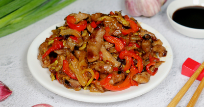

Свинина в кисло сладком соусе по китайски

Ингредиенты
Основные ингредиенты:
- Свинина – 400 гр.
- Лук – 1 шт
- Болгарский перец – 1 шт.
- Баклажаны - 0.5 шт
- Кабачки - 0.5 шт
- Соевые соус - 1 стол. л.
- Картофельный крахмал - 0.5 стол.л.
- Порошок имбиря - 0.5 чайн.л.
- Перец черный молотый - по вкусу
- Соль - по вкусу
- Порошок имбиря - 0.5 чайн. л.
- Перец черный молотый - по вкусу
- Соль - по вкусу
- Растительное масло - 5 стол.л.
Ингредиенты для заправки::
- Соевый соус - 2 стол.л.
- Рисовый уксус - 1 стол.л.
- Коричневый сахар - 0.5 чайн.л.
- Чеснок - 2 зубч.
Рецепт приготовления
- Как готовить свинину по китайски? Вначале подготовьте ингредиенты. Возьмите кусочек свинины и промойте его под проточной водой, затем обсушите его немного или обмакните бумажными полотенцами. Нарежьте свинину полосками толщиной не более 0,5 сантиметра.
- Теперь в емкость к свинине добавьте ложку соевого соуса, молотый имбирь, черный молотый перец, немного соли. Перемешайте все составляющие емкости, чтобы полосочки мяса были одинаково покрыты специями и соевым соусом. Оставьте на некоторое время свинину пропитываться маринадом.
- Теперь займитесь овощами. Их все нужно вымыть и насухо вытереть. Лук очистить от шелухи, перец – от семян и плодоножки. Все овощи нашинковать соломкой, лук нарезать полукольцами (можно использовать слайсер, если такового нет, то нарежьте овощи соломкой с помощью обычного ножа).
- В сковороду влейте немного растительного масла и поставьте разогреваться. В начале на уже разогретую сковороду выложите лук. Пассируйте его в течение двух минут.
- После добавьте все остальные овощи. Продолжайте готовить их в течение 10- 15 минут, постоянно помешивая их. Обжаренные овощи выложите их из сковороды. Можно жарить и меньше 10 минут, если хотите получить овощи с плотной консистенцией (на это потребуется 7 минут).
- Кусочки свинины равномерно посыпьте крахмалом и перемешайте. В сковороду добавьте еще немного масла. В сковороду выкладывайте мясо частями, чтобы кусочки лежали отдельно друг от друга, обжаривайте на среднем огне до готовности. На это понадобится 5-7 минут. В течение обжарки кусочки мяса несколько раз перемешайте.
- Теперь подготовьте все ингредиенты, необходимые для приготовления китайской заправки. Для этого смешайте соевый соус, сахар, рисовый уксус и измельченный чеснок.
- Все ингредиенты хорошо перемешайте и добавьте в сковороду, где уже лежат мясо и овощи. Перемешайте все еще раз и прогрейте на среднем огне в течение двух минут.
- Приятного аппетита!
Вернуться к списку блюд